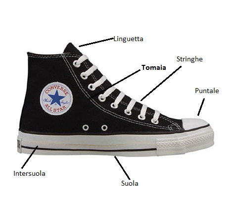

Descrizione
La scarpa è una calzatura che permette di coprire e proteggere il piede dalle possibili intemperie giornaliere, Una scarpa può essere realizzata in pelle, stoffa, cuoio o vari materiali sintetici ed è costituita da una parte inferiore che poggia a terra, ovvero la suola, e da una parte superiore più o meno estesa detta tomaia che ricopre il dorso del piede fino all'altezza del malleolo. Una scarpa può avere la suola piatta o essere dotata di un tacco che rende la camminata più agevole ( non credo XD ) e conferisce una maggiore altezza a chi la indossa. La tomaia può essere dotata di una stringatura che permette alla calzatura di aderire più strettamente al piede che la indossa. La parte anteriore della scarpa che riveste le falangi è chiamata puntale e può essere fatto di un differente materiale, per esempio per le calzature infortunistiche i puntali sono fatti d'acciaio. La parte che ricopre la parte laterale del piede si chiama intersuola.
Scarpe in vendita
Nel nostro sito di ecommerce potrai trovare una vasta gamma di scarpe per uomo e donna, da bambino a adulto, da quelle sportive a quelle eleganti...
Scarpe da Uomo
Le ossa del piede sono più grandi e pesanti, l'appoggio del tallone risulta quindi essere più laterale rispetto a quello femminile (più centrato). Ecco quindi che le aziende si sono adeguate inserendo nei modelli specifici da uomo dei sistemi ammortizzanti in posizione più laterali rispetto a quelli da donna.
Scarpe da Donna
L’anatomia femminile è caratterizzata dal fatto che il corpo della donna è “costruito” per essere in grado, all’occorrenza, di portare avanti una gravidanza e di partorire. Quindi la principale differenza anatomica riguarda il bacino che è più largo rispetto a quello dell’uomo. La conseguenza di questa diversa architettura del bacino e delle anche è che si hanno delle linee di forza differenti che agiscono su gli arti inferiori e sul piede. Rispetto al piede maschile, quindi, quello femminile presenta solitamente un arco plantare più alto. Per questo motivo i modelli per la donna hanno una tomaia con più supporto a livello dell’arco plantare, vale a dire la parte interna della scarpa. Alcune aziende hanno studiato modelli che hanno integrato in questa zona la tomaia con l’intersuola.
Modalità di vendita
La vendita di tutti i prodotti in catalogo è possibile ai soli utenti iscritti a questo sito di ecommerce.
Informazioni per il cliente
Offriamo ai nostri clienti costi di consegna differenziati. I prodotti acquistati ti saranno consegnati
ovunque tu desideri ed il costo dipenderà dall'area geografica, dal tipo di spedizione ed eventualmente dal peso del pacco.
L' annullamento di un ordine può avvenire esclusivamente mediante contatto telefonico,
(+39 34******** / 07******* ) senza particolari motivazioni, e se la spedizione non abbia già avuto luogo.